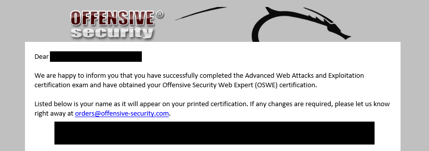

A journey to Offensive Security Web Expert
The intro
After completing PWK course and getting my Offensive Security Certified Professional (OSCP) certification in June 2019 I felt ready (you do not have OSCP? No problem - keep reading) for the Advanced Web attacks and Exploitation course, alias AWAE. My end goal was passing the Offensive Security Web Expert exam and earn the OSWE certification. I still remember the delicious adrenaline kick going through the 24-hour OSCP exam. Now I was looking at double that of OSCP - 48-hour exam (it's actually 47hours and 45 minutes).
I signed up for AWAE in late 2019, scheduling course start in January 2020. I actually took the bait on a "special price offer" mail from offensive security. Having a lot on my plate at work, I had to schedule this several months into the future. This gave me something to look forward to. Time went fast and suddenly it was that time when you are allotted 72 hours to download and save your watermarked course material. Yes, it is watermarked so that if you upload it somewhere stupid, Offsec know who to ban for life.
I was eager to start the course and made the n00b mistake of not scheduling my exam as the very first thing to do. Seriously, if you are enrolled in AWAE (or PWK for that matter) and not yet have scheduled your exam date, do it now. I'll wait - I'm good at that, because I had to wait 3 months after finishing the course before being able to take the exam. All because of my n00bness of not scheduling exam first thing.
The AWAE course
Hacking, in my opinion, is all about way of thinking combined with resourcefulness. It's the mindset that is important. Can this "thing" be "influenced" to do "actions" it is not supposed/designed to do? If you are able to understand that you don't understand, the door to rectification is already unlocked. So what are the requisites for taking the AWAE course? Persistence: Do not stop, even when it feels like you are going nowhere. Patience: You need to put in hours. Curiosity. Scripting skills: You need to be able to learn python. If you are a developer, you should also have an upper hand and if you are a web developer you should have two upper hands. On the other hand (come on...three hands??) if you do not understand HTTP or know what a proxy is, you should start somewhere else.
The "Try harder"
There is some noise about these courses (AWAE, OSCP) are being too hard and there is no help if you are stuck. Some elaborate on how fed up they are with the "try harder" mantra and response to the request for help. In my opinion, this is actually some of the things that makes Offsec so great. In my country we have mandatory military service for men. Military service, if not staff or otherwise administrative service, will teach you 'whoami' (at least it will in my country). It will teach you at what point your body will actually stop, not where you think it will stop (which is much sooner). I think this is relatable to the Offsec way of teaching. Try harder is just that - keep going, you think that your mind cannot go further, but it can.
If you are not a hacker by heart, then Offsec offers to teach you to be one if you allow it to - by trying harder - not giving up. So, to those that complain about the "try harder" mantra, quit your task attempt entirely or realize that you are already seriously cheating. Wait what? Yes, you already have gotten a ton of help. Because you KNOW that there is a vulnerability that is possible to exploit. In the real pentest world there is no one to hold your hand, there is no one saying that "yes, this server is vulnerable - try harder".
I also read people arguing the "certifications are not needed" to work in infosec and "anyone can get a piece of paper". While this may be true for a lot of branches, not just infosec, I think that an Offensive Security certification proves that you are not "all talk checking the right boxes on a piece of paper". OSWE exam is proctored, that means you are being surveilled the entire 47 hours and 45 minutes - by web camera and screen sharing. You must prove that you have what it takes. Certifications in my opinion will also land your CV in the "interview" pile of job applications instead of into the trash.
The labs
Comparing it to PWK, the AWAE lab environment is entirely different. You are provided a small number of machines that you will practice on. The course material is taking you through the machines covering different kinds of vulnerabilities. Personally, I think the course material maintains high quality. My method of consumption was the following:
- I went through the videos (featuring the voice of a longtime infosec/hacker legend) first. I did this on my commute to work. I initially also did it on the way back home, but soon realized my head was spent for the day. Meaning nothing would be saved to persistent storage - just living in (extra volatile) memory
- I went through the PDF rather quickly
- I checked the world for AWAE/OSWE exam information and preparation tips (you have probably already done this (that may even be the reason that you are here)
- Completed the extra mile exercises (important step)
- Completed some of the regular exercises
Everyone says it - and it is so very true: Complete the extra mile exercises. Every single one. Stuck? Lean on the Offsec forums and other students. By the time you read this, they have possibly already released the new community platform (beta launched couple of weeks ago). Still stuck? Try harder. Completing the rest of the exercises will give you a very nice warmup to python scripting, should that be unfamiliar to you.
The progress
I started with what I thought would be the easiest task, based on what I was most familiar with. I chose this to hopefully be motivated by a rather uncomplicated early win. Keeping my mind happy. Well I chased after the first hints I discovered, that put me into an 8-hour rabbit hole. Taking a 10-minute break a realized that what I am doing cannot be required of me. Take breaks, reboot your mind.
I was right - discovered the correct path, put the required things into a neat python script. Now things started to loosen up and I completed tasks slow and steady. I slept two different periods, first 4 hours after about 20ish hours in, then 3 hours after about 40ish hours in (yes in the end - I was done :D). I meant to sleep more, but adrenaline (and possibly abnormal levels of caffeine and taurine) kept me from doing that. I believe that more sleep would have allowed me to go faster on the tasks. I did get 100 out of 100 possible points.
The takeaways
- PRE-EXAM: Schedule exam early
- PRE-EXAM: Complete extra-mile excercises
- Try harder
- Take breaks
- Eat / drink
- Take screenshots
- Document progress
- Sleep
The report
Now came 24 hours of report-writing. I did not look at the report template before the exam had ended. The report template hints to include screenshots of 'id' and the 'proof.txt'. The task list I got on my exam did not reflected this. Here I was only required to screenshot the proof.txt and some other things. I ended up doing everything in the report just because I had the screenshots (was used to this in the OSCP). So be meticulous with your screenshots. I would recommend continuing the OSCP way of including screenshots of id, ipconfig and proof.txt. I do not know how my report was scored, but I do know I needed 85 points to pass.
The wait
Exam started 26.05.20 2PM and ended 28.05.20 at 1:45 PM. Report delivered 29.05.20 at 10:35 AM. Happy ending mail came 03.06.2020 8:57 PM. Just 5 days wait time!

I passed - woho!